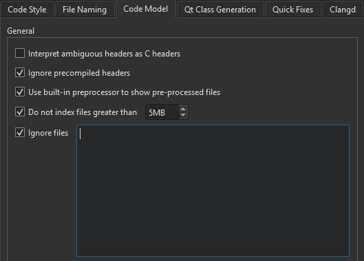

Code Model
The Clang code model offers services such as code completion, syntactic and semantic highlighting, and diagnostics.
To configure the Clang code model globally:
- Select Preferences > C++ > Code Model.

- To instruct the code model to interpret ambiguous header files as C language files if you develop mainly using C, select the Interpret ambiguous headers as C headers check box.
- To process precompiled headers, deselect the Ignore precompiled headers check box.
- To use the built-in preprocessor to show the pre-processed source file in the editor, select Use built-in preprocessor to show pre-processed files.
- To avoid out-of-memory crashes caused by indexing huge source files that are typically auto-generated by scripts or code, the size of files to index is limited to 5MB by default. To adjust the limit, edit the value for the Do not index files greater than check box. To index all files, deselect the check box.
- To ignore files that match wildcard patterns, select the Ignore files check box and enter each wildcard pattern on a separate line in the field.
Inspect preprocessed C++ code
To analyze the causes of compile errors or errors caused by wrong includes pulled in by dependencies or C++ macros expanding to something unexpected, select Show Preprocessed Source in the editor context menu.
This action expands all C++ macros to their actual code and removes code that is guarded by a currently inactive #ifdef statements.
If you clear Use built-in preprocessor to show pre-processed files, this action also expands all "#include <foo.h>" statements to their actual contents.
See also Specify clangd settings, Clang Code Model, and Clangd.